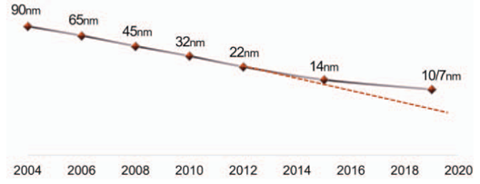
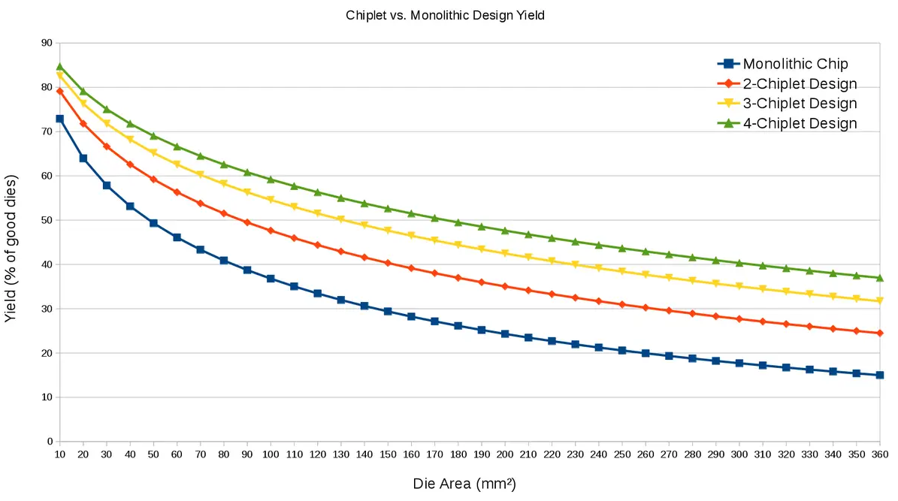
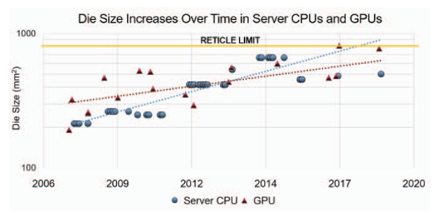
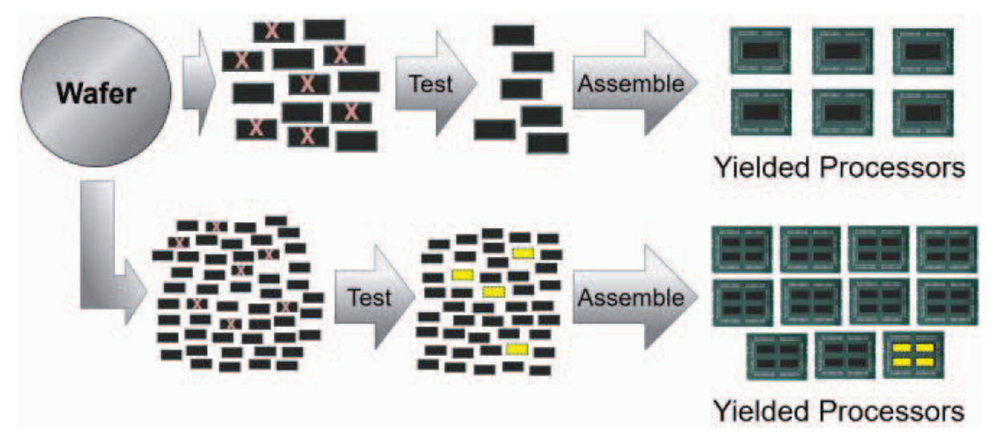
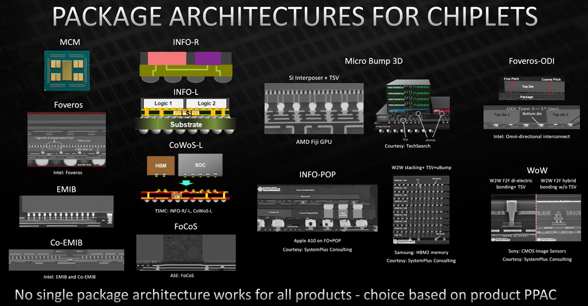

Why Chiplets Emerged: Scaling Beyond Monolithic Chips
The AI era has made one trend unmistakable: system-level demand is scaling faster than monolithic silicon can economically and physically sustain. Chiplets emerged as an engineering response to that widening gap.
For decades, performance gains mostly came from transistor scaling and larger single dies. That path still matters, but it is no longer sufficient by itself. As AI systems expanded, three constraints converged: workload demand accelerated, process-node scaling slowed, and the risk profile of very large dies worsened.
Demand Surge Across Compute, Memory, and Fabric
Modern AI workloads are pushing every major subsystem simultaneously:
- Higher compute throughput for both training and inference
- Larger memory capacity and substantially higher memory bandwidth
- Higher-performance interconnects in package, board, and cluster fabrics
This is not a temporary spike. Model scale, training data volume, and infrastructure footprint have all grown sharply over the last decade.2 One representative example is GPT-4 era training at massive cluster scale and cost (25,000 NVIDIA A100 GPUs over 2,280 hours, with cost estimates above $40 million).3


(a) Training compute

(b) Number of parameters
Monolithic Scaling is Under Pressure
As Moore's law slows, scaling a single large die becomes harder to sustain technically and economically:
- Node transitions are slower, costlier, and more complex
- Leading-edge process adoption increases development and mask cost
- Physical limits become more visible at advanced geometries
- Very large dies experience lower yield and larger cost variance
- Reticle limits constrain maximum monolithic die area
- Timing closure, power delivery, thermals, and validation complexity all increase6
Monolithic design remains viable for many products, but risk increases quickly with die size and complexity, especially for high-performance compute parts.




Chiplet: a New Dimension of Scaling
What is chiplet technology?
A chiplet-based design partitions a monolithic SoC into multiple smaller dies, each optimized for a specific role, then integrates them in one package through high-bandwidth die-to-die links so they operate as a single logical system.
From a microarchitecture perspective, this enables functional disaggregation: compute tiles, IO dies, cache or memory-adjacent dies, and accelerators can be developed and reused more independently.
This shifts scaling from transistor-only progress to co-optimization across manufacturing, packaging, and system-level integration.
Advantages of chiplets
Chiplet-based products offer several practical advantages:
- Higher effective yield by partitioning large dies into smaller known-good components
- Reusable IP blocks and faster product-family iteration
- Process-node matching so only critical blocks use leading-edge nodes
- Better cost/performance tradeoffs across diverse market segments
Accordingly, leading products across CPUs, GPUs, switching ASICs, and FPGAs increasingly adopt chiplet-oriented integration strategies.
Advanced packaging is the enabler
Chiplets are not only an architecture concept; they are fundamentally enabled by packaging technology:
- High-density, low-energy die-to-die links
- More capable substrates, bridges, and interposer technologies
- Mature integration methods for heterogeneous process nodes and IP blocks
Advanced packaging makes it practical to combine compute, IO, and memory-adjacent logic from different process nodes in one package. This is a core reason chiplet products have become mainstream only in recent years.


Insights from the Networking Perspective
To meet the requirements of modern and future AI training and inference, the computing infrastructure has to exhaust the scaling potential across all layers:
- On-die architecture
- Multi-die packaging
- Board-, machine-, and rack-level integration
- In-cluster scaling
- Inter-cluster cooperation
At every level, data movement is the key bottleneck. This presents a wide range of optimization opportunities, covering:
- Networks on Chip (NoCs)
- Networks in Package (NiPs)
- Scale-Up Networks
- Scale-Out Networks
- Scale-Across Networks
Real throughput gains come from balancing all layers rather than over-optimizing only one.
A subjective point: we see strong potential in researching interconnects for chiplet-based switching chips. It not only involves optimization at the NoC and NiP levels, but can also bring more possibilities to higher-level network designs by enabling better network switches.
Chiplets do not replace process scaling; they reduce dependence on process scaling alone. Sustainable performance growth comes from joint innovation across manufacturing, packaging, and networking.
Draft written by Yang Zhang and Xu Wang (2024/07)
Polished and formatted by GPT-5.3-Codex (2026/04)
Latest update (2026/04)
References
- Scaling Laws for Neural Language Models. https://arxiv.org/abs/2001.08361
- Epoch AI, "Data on Notable AI Models". Retrieved from https://epochai.org/data/notable-ai-models.
- GPT-4 Technical Report. https://arxiv.org/abs/2303.08774
- Naffziger, Samuel, et al. "Pioneering chiplet technology and design for the AMD EPYC and Ryzen processor families: Industrial product." 2021 ACM/IEEE ISCA.
- Wong, H-S. Philip, R. Willard, and Inez Kerr Bell. "IC Technology-What Will the Next Node Offer Us?" 2019 IEEE Hot Chips 31 Symposium.
- Esmaeilzadeh, Hadi, et al. "Dark silicon and the end of multicore scaling." ISCA 2011.
- https://en.wikichip.org/wiki/chiplet
- Raja Swaminathan, AMD, "Case Study: AMD products built with 3D packaging", Hot Chips 2021.